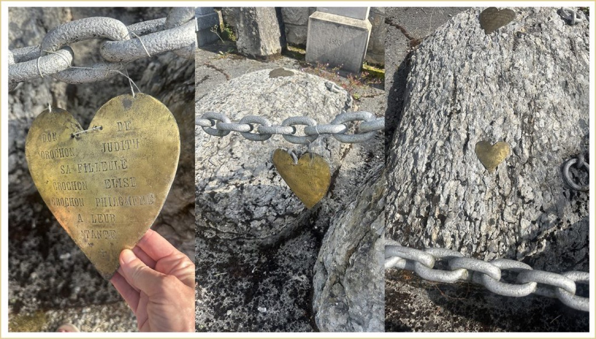
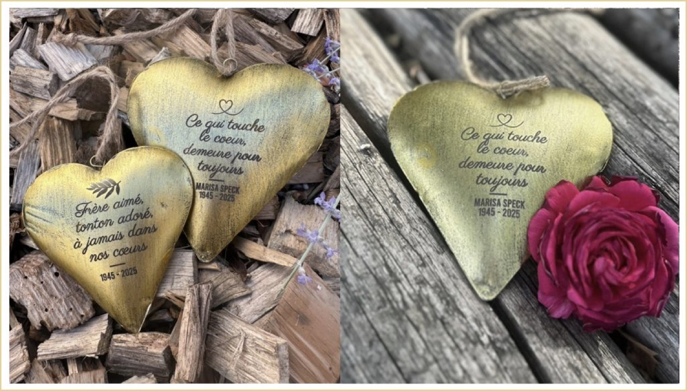
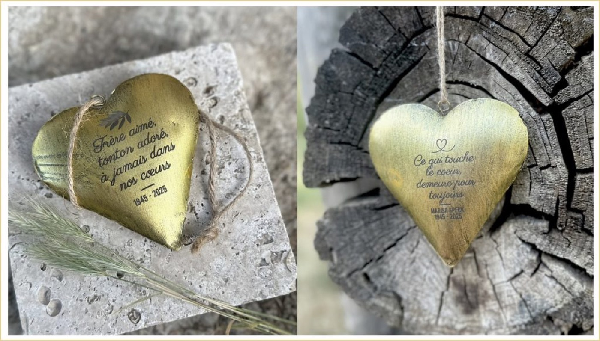

Lors d’une visite dans un ancien cimetière de Savoie, j’ai découvert de petits cœurs en métal gravés datant probablement de plus d’un siècle. Malgré le temps et les intempéries, ils portaient encore les noms et les hommages de familles venues témoigner leur affection.
Cette découverte m’a profondément touchée.

Le cœur est sans doute l’un des symboles les plus universels du souvenir et de l’amour. Hier comme aujourd’hui, il exprime ce lien précieux qui continue d’exister malgré l’absence.
Inspirée par ces témoignages du passé, j’ai imaginé une version contemporaine : des cœurs en métal gravés, personnalisés avec un prénom, des dates ou quelques mots choisis.
À suspendre, à déposer près d’une sépulture ou dans un jardin du souvenir, ils offrent une manière simple, élégante et personnelle de rendre hommage à ceux qui continuent de vivre dans nos cœurs.

